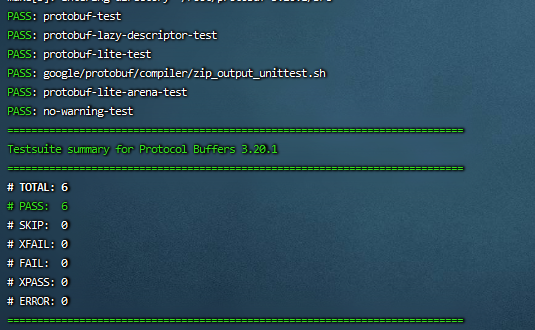

protobuf
安装的是c++版本protobuf
到下面去下载想要的版本
我下载的是protobuf-cpp-3.20.1.tar.gz
sudo apt-get install autoconf automake libtool curl make g++ unzip
tar xvfz protobuf-cpp-3.20.1.tar.gz
cd protobuf-3.20.1
# $(nproc) ensures it uses all cores for compilation
./configure
make -j$(nproc)
make check
sudo make install
# refresh shared library cache.
sudo ldconfig 
在2.2.0版本后，在编译时需要传递各种链接才能完成编译，protobuf使用pkg-config管理
pkg-config --cflags protobuf # print compiler flags
pkg-config --libs protobuf # print linker flags
pkg-config --cflags --libs protobuf # print bothFor example:
c++ my_program.cc my_proto.pb.cc `pkg-config --cflags --libs protobuf`protobuf Example
cd examples
make cpp
./add_person_cpp addressbook.data
./list_people_cpp addressbook.data通过查看代码，在.proto文件里有数据的最基本定义
syntax = "proto3";
package tutorial;
import "google/protobuf/timestamp.proto";//导入想要使用的包
message Person {
string name = 1;
int32 id = 2; // Unique ID number for this person.
string email = 3;
enum PhoneType {
MOBILE = 0;
HOME = 1;
WORK = 2;
}
message PhoneNumber {
string number = 1;
PhoneType type = 2;
}
repeated PhoneNumber phones = 4;
google.protobuf.Timestamp last_updated = 5;
}
// Our address book file is just one of these.
message AddressBook {
repeated Person people = 1;
}在使用时，使用protoc
使用记录
mutable_*()
protobuf mutable_* 函数
从该函数的实现上来看，该函数返回指向该字段的一个指针。同时将该字段置为被设置状态。
若该对象存在，则直接返回该对象，若不存在则新new 一个。
string和bytes类型
protobuf中有string 和 bytes两种数据类型， 相对应于python中的 string和 bytes类型。但在C++
中有std::string 却没有bytes类型。他们之间怎么转换。
看了一些介绍得到的结论是：
（1）在C++中，protobuf的string类型和bytes类型都对应与C++的std::string类型
（2）区别是，protobuf中string 对应的 std::string 类型需进行UTF8字符的检查，而bytes对应的std::string类型三不进行UTF8字符检查的
proto对象定义
package proto;
message Message{
oneof type {
Transaction txn = 1;
}
}
message Transaction{
repeated Row row = 1;
uint64 start_epoch = 2;
TxnType txn_type = 3;
}
enum TxnType {
ClientTxn = 0;
RemoteServerTxn = 1;
EpochEndFlag = 2;
CommittedTxn = 3;
}
message Row{
string key = 1;
bytes data = 2;
}auto msg = std::make_unique<proto::Message>();// 定义一个Message对象
auto apply = msg->mutable_txn();//oneof使用mutable_name()调用，定义该对象是哪种类型
apply->set_txn_type(proto::TxnType::ClientTxn);//添加一个enum值
apply->set_start_epoch(1);//设置一个uint64值
auto row = apply->add_row();//添加repeated对象
row->set_table_name("table");
row->set_key("key1");//bytes 和 string的区别在于序列化，string类型在序列化utf-8时会出现问题
auto msg_ptr = std::make_unique<proto::Message>();
if (msg_ptr->type_case() == proto::Message::TypeCase::kTxn){//oneof前要加个k
txn_ptr = std::make_unique<proto::Transaction>(*(msg_ptr->release_txn()));
uint64_t epoch = txn_ptr->start_epoch();
for(auto i = 0; i < txn_ptr->row_size(); i ++){
const auto& row = txn_ptr->row(i);
printf("%s %s\n",row.key(),row.data());
}
}protobuf
https://codebells.github.io/post/protobuf.html